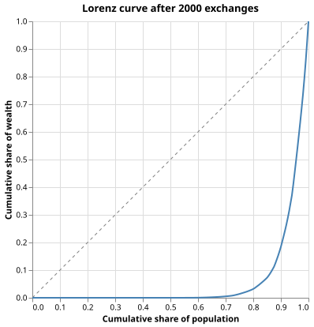
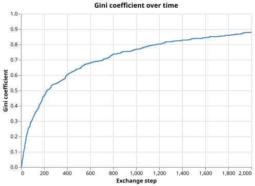

Wealth Inequality in an Exchange Economy
The Problem
- Even when individuals exchange resources randomly with no deliberate hoarding, wealth concentrates in a small number of hands over time.
- This is the central insight of agent-based models of exchange: inequality can emerge from random processes, not only from skill differences or deliberate exploitation.
- The model works as follows:
- Start with $N$ agents, each holding 1 unit of wealth (total wealth $= N$).
- At each step, choose two agents at random; the poorer transfers a uniformly random fraction of their own wealth to the richer.
- Repeat for many steps and track the wealth distribution.
In the yardsale model, Agent A has 0.4 units and Agent B has 1.6 units. A fraction $f = 0.25$ is drawn. What is Agent A's wealth after the exchange?
- 0.3 units.
- Correct: Agent A is poorer, so A transfers $0.25 \times 0.4 = 0.1$ units to B. $0.4 - 0.1 = 0.3$.
- 0.5 units.
- Wrong: the fraction applies to A's wealth (0.4), not to the total (2.0) or B's wealth (1.6).
- 0.1 units.
- Wrong: 0.1 is the transfer amount, not A's remaining wealth.
- 0.4 units.
- Wrong: A is the poorer agent and must transfer wealth to B.
The Gini Coefficient
- The Gini coefficient $G$ is the most widely used scalar summary of inequality: it equals 0 for perfect equality and approaches 1 when all wealth is concentrated in one agent.
- It is defined as the mean absolute difference in wealth between all pairs, normalised by twice the mean wealth:
$$G = \frac{\sum_i \sum_j |w_i - w_j|}{2\,n \sum_i w_i}$$
- Computing this directly requires $O(n^2)$ comparisons. Sorting the wealth array first reduces the cost to $O(n \log n)$: after sorting so that $w_{(1)} \leq w_{(2)} \leq \cdots \leq w_{(n)}$,
$$G = \frac{2\sum_{i=1}^n i\,w_{(i)} - (n+1)\sum_i w_i}{n \sum_i w_i}$$
def gini(wealth):
"""Gini coefficient of a wealth distribution.
Uses the sorted-array formula:
G = (2 * sum(i * w_(i)) - (n+1) * sum(w)) / (n * sum(w))
where indices i are 1-based and w_(i) is the i-th smallest wealth.
Returns 0 for perfect equality and (n-1)/n when one agent holds everything.
"""
n = len(wealth)
sorted_w = np.sort(wealth)
indices = np.arange(1, n + 1)
total = np.sum(sorted_w)
return (2.0 * np.dot(indices, sorted_w) - (n + 1) * total) / (n * total)
Three agents hold 1, 1, and 1 unit of wealth respectively. Using the formula $G = (2\sum i\,w_{(i)} - (n+1)\sum w) / (n\sum w)$ with $n=3$, compute the Gini coefficient.
The Exchange Simulation
- The simulation records the Gini coefficient after every exchange so we can watch inequality grow from zero.
- A key invariant: total wealth $\sum_i w_i = N$ is conserved exactly at every step because each transfer moves wealth without creating or destroying it.
def simulate_exchange(n_agents=N_AGENTS, n_steps=N_STEPS, seed=SEED):
"""Run the random-exchange wealth model.
Agents start with equal wealth of 1.0 each. At every step two distinct
agents are chosen uniformly at random; the poorer transfers a uniformly
random fraction of their own wealth to the richer. Total wealth is
conserved exactly at n_agents throughout.
Returns (final_wealth, gini_history) where gini_history[t] is the Gini
coefficient after t exchanges (gini_history[0] is the initial value 0.0).
"""
rng = np.random.default_rng(seed)
wealth = np.ones(n_agents, dtype=float)
gini_history = np.empty(n_steps + 1)
gini_history[0] = gini(wealth)
for step in range(n_steps):
i, j = rng.choice(n_agents, size=2, replace=False)
if wealth[i] > wealth[j]:
i, j = j, i # i is now the poorer agent
fraction = rng.uniform(0.0, 1.0)
transfer = fraction * wealth[i]
wealth[i] -= transfer
wealth[j] += transfer
gini_history[step + 1] = gini(wealth)
return wealth, gini_history
Put the exchange steps in the correct order.
- Choose two distinct agents $i$ and $j$ uniformly at random
- Identify the poorer agent (swap labels if necessary so $w_i \leq w_j$)
- Draw fraction $f \sim \text{Uniform}(0, 1)$
- Compute transfer $\delta = f \cdot w_i$
- Update $w_i \leftarrow w_i - \delta$ and $w_j \leftarrow w_j + \delta$
The Lorenz Curve
- The Lorenz curve gives a visual picture of the whole distribution, not just a single number.
- Sort agents by wealth ascending; the curve plots the cumulative fraction of total wealth held by the bottom $x$ fraction of the population.
- Perfect equality produces the 45-degree line $y = x$. Any inequality bows the curve below that line.
- The Gini coefficient equals twice the area between the Lorenz curve and the equality line.
def lorenz_curve(wealth):
"""Return (population_fractions, wealth_fractions) arrays for the Lorenz curve.
Both arrays start at (0, 0) and end at (1, 1). The area between the
curve and the 45-degree equality line equals G/2, where G is the Gini
coefficient.
"""
n = len(wealth)
sorted_w = np.sort(wealth)
cum_w = np.cumsum(sorted_w)
pop_fracs = np.arange(0, n + 1) / n
wealth_fracs = np.concatenate([[0.0], cum_w / cum_w[-1]])
return pop_fracs, wealth_fracs
def plot_lorenz_curve(wealth, filename):
"""Save a Lorenz curve with the line of equality overlaid."""
pop_fracs, wealth_fracs = lorenz_curve(wealth)
df_lorenz = pl.DataFrame({"population": pop_fracs, "wealth": wealth_fracs})
df_equal = pl.DataFrame({"population": [0.0, 1.0], "wealth": [0.0, 1.0]})
lorenz_line = (
alt.Chart(df_lorenz)
.mark_line(color="steelblue", strokeWidth=2)
.encode(
x=alt.X("population:Q", title="Cumulative share of population"),
y=alt.Y("wealth:Q", title="Cumulative share of wealth"),
)
)
equal_line = (
alt.Chart(df_equal)
.mark_line(color="gray", strokeDash=[4, 4], strokeWidth=1)
.encode(x="population:Q", y="wealth:Q")
)
chart = alt.layer(equal_line, lorenz_line).properties(
width=350, height=350, title="Lorenz curve after 2000 exchanges"
)
chart.save(filename)

In a Lorenz curve, the point $(0.5,\; 0.2)$ means:
- The wealthiest 50% of agents hold 20% of total wealth.
- Wrong: the curve shows the bottom (poorest) fraction, not the top.
- The poorest 50% of agents hold 20% of total wealth.
- Correct: the Lorenz curve always measures cumulative shares starting from the poorest.
- 20% of agents each hold exactly 50% of total wealth.
- Wrong: the axes represent cumulative fractions, not individual shares.
- The Gini coefficient equals 0.2.
- Wrong: the Gini is twice the area between the Lorenz curve and the diagonal, not the $y$-value at $x = 0.5$.
Gini Trajectory
def plot_gini_trajectory(gini_history, filename):
"""Save a line chart of the Gini coefficient at each exchange step."""
df = pl.DataFrame(
{
"step": np.arange(len(gini_history)),
"gini": gini_history,
}
)
chart = (
alt.Chart(df)
.mark_line(color="steelblue", strokeWidth=2)
.encode(
x=alt.X("step:Q", title="Exchange step"),
y=alt.Y(
"gini:Q", scale=alt.Scale(domain=[0.0, 1.0]), title="Gini coefficient"
),
)
.properties(width=450, height=300, title="Gini coefficient over time")
)
chart.save(filename)

- The Gini rises quickly at first because early random exchanges quickly produce a spread in wealth from identical starting values.
- Growth slows as wealth concentrates: the few richest agents now dominate exchanges, but the model has no way to reverse concentration once it is established.
- The theoretical steady-state Gini for an exponential wealth distribution is exactly 0.5 (see Exercises), but the yardsale model's convergence is slow and in practice the simulated Gini often exceeds 0.5 because the distribution is not yet truly exponential.
Testing
- Equal-distribution baseline
gini(np.ones(n))must return exactly 0.0 for any $n$. Analytically: substituting $w_{(i)} = 1$ gives $2n(n+1)/2 - (n+1)n = 0$ in the numerator.- Perfect-inequality limit
- When one agent holds all wealth, the formula gives $(n-1)/n$. For $n = 10$: $G = 0.9$, which approaches 1 as $n \to \infty$, confirming the coefficient never quite reaches 1 for any finite population.
- Gini stays in [0, 1]
- Wealth is non-negative and total wealth is conserved, so the formula is always well-defined and bounded.
- Total wealth conserved
- The sum of all agent wealths must equal $N$ to within floating-point rounding throughout the full simulation.
- Gini rises from zero
- Starting from equal wealth (Gini = 0), the simulation must produce substantial inequality after 2000 steps. With seed 7493418 the final value is 0.88, well above the 0.3 threshold.
import numpy as np
import pytest
from wealth import gini, simulate_exchange, N_AGENTS
def test_gini_equal_distribution():
# With identical wealth for every agent the Gini must be exactly 0.
# Analytically: (2 * n(n+1)/2 - (n+1)*n) / n^2 = 0 for any n.
assert gini(np.ones(50)) == pytest.approx(0.0, abs=1e-12)
def test_gini_perfect_inequality():
# One agent holds all wealth; Gini = (n-1)/n.
# With n=10: G = 9/10 = 0.9 exactly.
n = 10
w = np.zeros(n)
w[-1] = float(n)
assert gini(w) == pytest.approx((n - 1) / n, rel=1e-9)
def test_gini_bounded_during_simulation():
# Wealth is always non-negative and total wealth is conserved, so the
# Gini coefficient must stay in [0, 1] at every step.
_, gini_history = simulate_exchange()
assert np.all(gini_history >= 0.0)
assert np.all(gini_history <= 1.0)
def test_total_wealth_conserved():
# Every exchange transfers wealth without creation or destruction, so
# the sum must equal n_agents (each agent starts with 1.0) to within
# floating-point rounding.
final_wealth, _ = simulate_exchange()
assert np.sum(final_wealth) == pytest.approx(N_AGENTS, rel=1e-9)
def test_gini_rises_from_zero():
# The model starts from perfect equality (Gini = 0) and should
# produce substantial inequality after 2000 exchanges.
# The theoretical steady-state Gini for exponential wealth distributions
# is 0.5; after 2000 steps the simulated value reliably exceeds 0.3.
_, gini_history = simulate_exchange()
assert gini_history[0] == pytest.approx(0.0, abs=1e-12)
assert gini_history[-1] > 0.3
Wealth inequality key terms
- Gini coefficient $G$
- $(2\sum i\,w_{(i)} - (n+1)\sum w) / (n\sum w)$ for sorted wealth; 0 for perfect equality, $(n-1)/n$ when all wealth is held by one agent
- Lorenz curve
- Plot of cumulative wealth fraction vs. cumulative population fraction, both sorted from poorest to richest; the area between the curve and the 45-degree line equals $G/2$
- Agent-based model
- Simulation in which autonomous agents follow local rules; emergent population-level patterns (such as inequality) arise from many individual interactions
- Yardsale model
- Random exchange rule in which the poorer agent transfers a random fraction of their own wealth to the richer; produces exponential steady-state wealth distribution
- Wealth conservation invariant
- $\sum_i w_i = N$ at every step; a transfer $\delta$ from agent $i$ to $j$ subtracts $\delta$ from $w_i$ and adds $\delta$ to $w_j$, leaving the total unchanged
Exercises
Theoretical steady-state Gini
For an exponential distribution with rate $\lambda$, all agents draw wealth $w \sim \text{Exp}(\lambda)$ independently. Show algebraically that the Gini coefficient of this distribution is exactly 0.5. (Hint: use the formula $G = 1 - 2\int_0^\infty S(w)^2 \, dw / \text{E}[W]$ where $S(w) = e^{-\lambda w}$ is the survival function.)
Convergence as a function of $N$
Run the simulation with 50, 200, and 1000 agents for 10 000 steps each and plot the final Gini as a function of $N$. Does the steady-state Gini depend on the population size, or does it converge to the same value regardless of $N$?
Redistribution policy
Add a "redistribution step" every 100 exchanges: take 10% of the total wealth held by the top decile (wealthiest 10% of agents) and distribute it equally to all agents. How does this change the trajectory and steady-state Gini?
Symmetric exchange rule
Change the transfer rule: instead of the poorer agent transferring a fraction of their own wealth, both agents contribute a fraction of their own wealth to a pool and the pool is split 50/50. Show that total wealth is still conserved under this rule, then compare the resulting Gini trajectory to the original yardsale model.